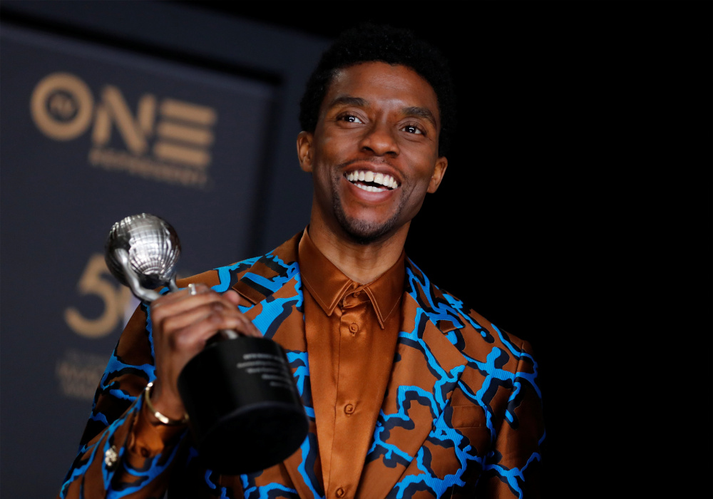

Chadwick Boseman tipped for posthumous glory with 'Ma Rainey' swansong.
Timeline of Chadwick Boseman
- Career
- 2002: AUDELCO Awards (Best Supporting Actor in a Drama)
- 2008: Hollywood Black Film Festival (Best Short Film)
- 2015: Santa Barbara International Film Festival (Virtuoso Award)
- 2018: BET Awards (Best Actor)
- MTV Movie & TV Awards (Best Performance in a Movie)
- MTV Movie & TV Awards (Best Hero)
- 2019: BET Awards (Best Actor)
- Black Reel Awards(Outstanding Actor)
- NAACP Image Awards (Outstanding Actor in a Motion Picture)
- Screen Actors Guild Awards(Outstanding Cast in a Motion Picture)
- 2020: Boston Society of Film Critics (Best Ensemble Cast)
- Chicago Film Critics Association(Best Actor)
- Los Angeles Film Critics Association(Best Actor)
- MTV Movie & TV Awards – Special(The G.O.A.T. – Hero for the Ages)
- New York Film Critics Circle(Best Supporting Actor)
- 2021: Alliance of Women Film Journalists(Best Actor)
- Gotham Independent Film Awards(Actor Tribute)
- National Board of Review(NBR Icon Award)
- San Francisco Bay Area Film Critics Circle(Best Actor)
- St. Louis Gateway Film Critics Association(Best Actor)
Back